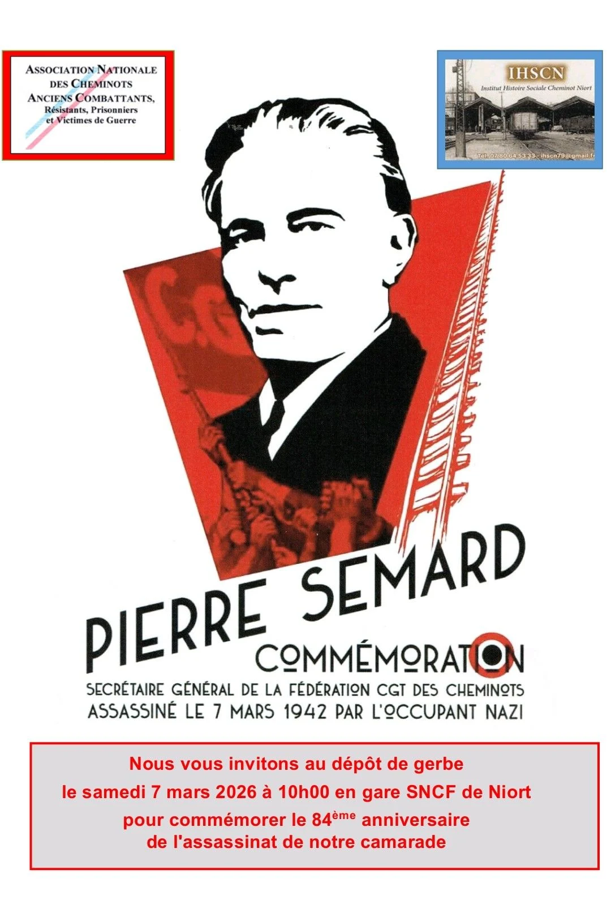

Commémoration relayée
À la gare de Niort, l’appel à rendre hommage à Pierre Sémard
Date indiquée par Facebook · 7 mars 2026
Repères éditoriaux
À Niort, l’Association nationale des cheminots anciens combattants et l’Institut d’histoire sociale cheminot avaient appelé à un dépôt de gerbe à la gare le samedi 7 mars 2026 à 10 h. Ils rendaient hommage à Pierre Sémard, dirigeant communiste et syndicaliste cheminot fusillé le 7 mars 1942.
Texte conservé avec la publication
Hommage à Pierre Semard, ex secrétaire général de la Fédération CGT des cheminots et dirigeant national PCF - Parti Communiste Français
Hommage à Pierre Semard, ex secrétaire général de la Fédération CGT des cheminots et dirigeant national @[100044518955973:2048:PCF - Parti Communiste Français]

Sources
Archive rouge · export Facebook · AR-0002-FB-00845
À lire aussi · L'élan de la Libération de Paris · Le lien d’origine